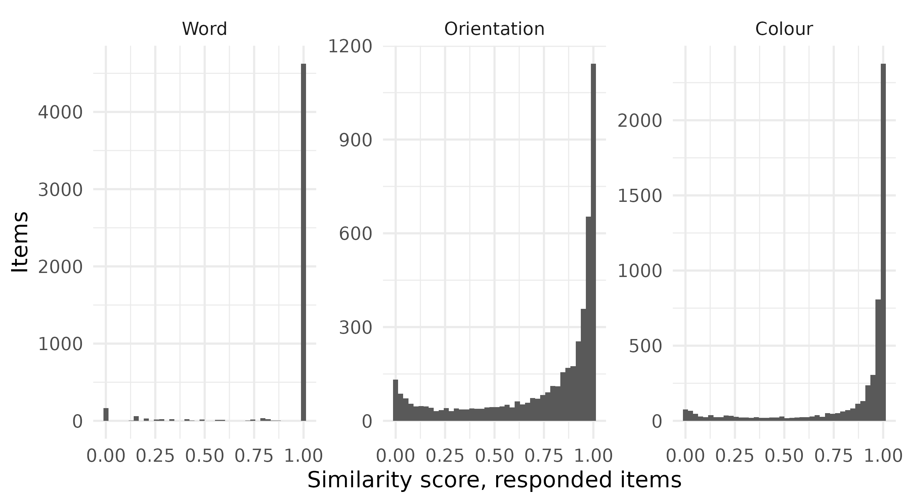

Scoring the WM-FTT: what the numbers are, and what they support
Source:vignettes/articles/scoring.Rmd
scoring.RmdThe Working Memory Feature Trade-off Task asks participants to hold
three features of each stimulus (a word, the orientation of the
rectangle containing it, and its colour) and to report all three at
recall. Scoring it is less obvious than it looks. This page documents
how the scores in all_data are computed, what the
distributions look like, how reliable they are, and which claims they
will and will not support.
Every number below is computed from all_data when this
page is built, not transcribed from an analysis run elsewhere.
The data this page works from
all_data is stimulus-level: one row per presented
stimulus, with all three recalled features side by side in separate
columns. Almost every question below is about features, so the
first step is to reshape to one row per stimulus per feature. Three
frames are built once here and reused throughout.
# 1. Experimental-block rows only. Tutorial rows carry placeholder values,
# and training rows precede the blocks by design.
block_trials <- all_data |>
dplyr::filter(grepl("^expe_block", expe_phase)) |>
dplyr::mutate(
participant = paste(id, version, sep = "_"), # one id spans two versions
trial_id = paste(expe_phase, trial_number, sep = "_"),
position_in_trial = (item_number - 1L) %% 3L + 1L
)
# 2. One row per stimulus per feature: score, whether it was answered.
trials_by_feature <- block_trials |>
dplyr::select(
id, participant, version, trial_id, position_in_trial,
vviq = vviq_total_score,
score_word, score_angle, score_color,
responded_word, responded_angle, responded_color
) |>
tidyr::pivot_longer(
cols = c(tidyselect::starts_with("score_"),
tidyselect::starts_with("responded_")),
names_to = c(".value", "feature"),
names_pattern = "(score|responded)_(word|angle|color)"
) |>
dplyr::mutate(
feature = factor(feature, levels = c("word", "angle", "color"),
labels = c("Word", "Orientation", "Colour"))
)
# 3. v1 alone is the primary analysis sample; see section 4.
v1_trials <- dplyr::filter(trials_by_feature, version == "v1")
# 4. One mean per participant per feature, over answered items only.
v1_participant_means <- v1_trials |>
dplyr::filter(responded) |>
dplyr::summarise(
mean_score = mean(score),
n_answered = dplyr::n(),
vviq = dplyr::first(vviq),
.by = c(id, feature)
)
dplyr::slice_head(trials_by_feature, n = 6) |>
knitr::kable(digits = 3, caption = "trials_by_feature: first six rows")| id | participant | version | trial_id | position_in_trial | vviq | feature | score | responded |
|---|---|---|---|---|---|---|---|---|
| aacu64091390979054fksk | aacu64091390979054fksk_v1 | v1 | expe_block_1_1 | 1 | 16 | Word | 1.000 | TRUE |
| aacu64091390979054fksk | aacu64091390979054fksk_v1 | v1 | expe_block_1_1 | 1 | 16 | Orientation | 0.383 | TRUE |
| aacu64091390979054fksk | aacu64091390979054fksk_v1 | v1 | expe_block_1_1 | 1 | 16 | Colour | 0.967 | TRUE |
| aacu64091390979054fksk | aacu64091390979054fksk_v1 | v1 | expe_block_1_1 | 2 | 16 | Word | 0.200 | TRUE |
| aacu64091390979054fksk | aacu64091390979054fksk_v1 | v1 | expe_block_1_1 | 2 | 16 | Orientation | 0.000 | FALSE |
| aacu64091390979054fksk | aacu64091390979054fksk_v1 | v1 | expe_block_1_1 | 2 | 16 | Colour | 0.000 | FALSE |
1. Why the task’s own scores are not the analysis scores
WM-FTT computes scores in the browser, to display feedback between
trials. Those columns survive in all_data under a
feedback_ prefix, alongside the intermediate
dissimilarities they derive from under live_diff_. Neither
should be analysed. The reason is not that in-task feedback is coarse,
though it is. It is that one of the three metrics is wrong.
The loop condition is an assignment. i = 0
evaluates to 0, which is falsy, so the body never runs and
the first column of the dynamic-programming matrix is never initialised.
It keeps its fill(0) value, which makes deleting any prefix
of the target free. The function is named
levenshteinDistance and does not compute Levenshtein
distance; it returns something closer to an approximate-substring
distance, systematically smaller and never larger. The paired loop
initialising the first row is correct, so only one boundary is
broken. That is why exact matches still score 0, and why the error
survived three versions of the task undetected.
The claim is testable. Below is a faithful R port of the broken function, dead loop included, compared against the correct distance.
broken_levenshtein <- function(target, response) {
n_target <- nchar(target)
n_response <- nchar(response)
if (n_target == 0 || n_response == 0) return(0)
distances <- matrix(0L, n_target + 1L, n_response + 1L)
distances[1L, seq_len(n_response) + 1L] <- seq_len(n_response)
# The first column is never initialised: this is the bug.
target_chars <- strsplit(target, "")[[1]]
response_chars <- strsplit(response, "")[[1]]
for (i in seq_len(n_target)) for (j in seq_len(n_response)) {
distances[i + 1L, j + 1L] <-
if (target_chars[i] == response_chars[j]) distances[i, j] else
min(distances[i, j + 1L], distances[i + 1L, j], distances[i, j]) + 1L
}
1 - distances[n_target + 1L, n_response + 1L] / max(n_target, n_response)
}
# JavaScript's Math.round() rounds half away from zero; R's round() does not.
js_round_2dp <- function(x) floor(x * 100 + 0.5) / 100
word_reproduction <- all_data |>
dplyr::filter(expe_phase != "tutorial") |>
dplyr::transmute(
stored_value = live_diff_word,
target = normalise_word(target_word),
response = normalise_word(response_word),
both_present = nzchar(target) & nzchar(response),
from_broken_code = js_round_2dp(
1 - purrr::map2_dbl(target, response, \(tgt, rsp)
if (nzchar(tgt) && nzchar(rsp)) broken_levenshtein(tgt, rsp) else 0)
),
from_correct_code = js_round_2dp(dplyr::if_else(
both_present,
purrr::map2_int(target, response, \(tgt, rsp) as.integer(utils::adist(tgt, rsp))) /
pmax(nchar(target), nchar(response)),
1
))
)
reproduction_summary <- word_reproduction |>
dplyr::summarise(
items = dplyr::n(),
matched_by_broken_code = sum(from_broken_code == stored_value),
matched_by_correct_code = sum(from_correct_code == stored_value)
)
knitr::kable(reproduction_summary,
caption = "Which implementation reproduces the stored column")| items | matched_by_broken_code | matched_by_correct_code |
|---|---|---|
| 8496 | 8496 | 8183 |
The broken port reproduces the stored column for every one of the 8496 items. Correct Levenshtein reproduces 8183. A worked example:
tibble::tibble(
target = "cadeau",
response = "tout",
correct_distance = as.integer(utils::adist(target, response)),
broken_distance = round(
(1 - broken_levenshtein(target, response)) * nchar(target)),
stored_live_diff_word = all_data |>
dplyr::filter(target_word == "cadeau", response_word == "tout") |>
dplyr::pull(live_diff_word) |>
dplyr::first()
) |>
knitr::kable(caption = "One item, scored three ways")| target | response | correct_distance | broken_distance | stored_live_diff_word |
|---|---|---|---|---|
| cadeau | tout | 6 | 3 | 0.5 |
The practical consequence is small: in-task feedback was more generous on word recall than intended. The methodological one is not. It is why every score in this package is computed from raw target and response values in R rather than transformed from the front end’s output.
2. The three metrics
Word uses the edit-distance scoring of Gonthier (2022): Damerau-Levenshtein distance, capped at the target’s length, subtracted from that length and divided by it. Bounded on [0, 1] and floored at 0 by construction.
Decomposing that formula against a naive normalised distance, one design choice at a time:
word_score_variants <- block_trials |>
dplyr::filter(version == "v1", responded_word) |>
dplyr::transmute(
target = normalise_word(target_word),
response = normalise_word(response_word),
target_length = nchar(target),
longer_length = pmax(nchar(target), nchar(response)),
damerau = purrr::map2_dbl(target, response, damerau_levenshtein),
levenshtein = purrr::map2_dbl(target, response,
\(tgt, rsp) as.integer(utils::adist(tgt, rsp)))
) |>
dplyr::mutate(
as_adopted = (target_length - pmin(damerau, target_length)) / target_length,
with_plain_metric = (target_length - pmin(levenshtein, target_length)) / target_length,
with_longer_denominator = (target_length - pmin(damerau, target_length)) / longer_length,
without_the_cap = (target_length - damerau) / target_length
)
word_formula_decomposition <- tibble::tribble(
~design_choice, ~column,
"Metric: Damerau-Levenshtein vs plain Levenshtein", "with_plain_metric",
"Denominator: target length vs longer string", "with_longer_denominator",
"The cap that floors the score at 0", "without_the_cap"
) |>
dplyr::mutate(
items_changed = purrr::map_int(column, \(variant)
sum(abs(word_score_variants$as_adopted - word_score_variants[[variant]]) > 1e-9)),
of_items = nrow(word_score_variants)
) |>
dplyr::select(design_choice, items_changed, of_items)
knitr::kable(word_formula_decomposition,
caption = "Items whose score changes if one choice is reversed")| design_choice | items_changed | of_items |
|---|---|---|
| Metric: Damerau-Levenshtein vs plain Levenshtein | 8 | 5100 |
| Denominator: target length vs longer string | 88 | 5100 |
| The cap that floors the score at 0 | 55 | 5100 |
The transposition rule that gives the metric its name changes 8 items; the denominator changes 88; the cap changes 55, and without it scores fall as low as -0.75. The least famous of the three decisions does the most work.
Colour and orientation both use a cosine of the angular error, with different periods. Colour is a hue wheel: period 360. Orientation is the tilt of a plain rectangle, which has 180° rotational symmetry. A rectangle at +80° and one at −80° differ by 160° arithmetically but are 20° apart as orientations, and both look near-horizontal. The response widget clamps to [−90, 90], exactly one period.
orientation_period_comparison <- block_trials |>
dplyr::filter(version == "v1") |>
dplyr::mutate(with_period_360 = dplyr::if_else(
responded_angle,
score_angular(target_angle, response_angle, period = 360),
0
)) |>
dplyr::summarise(
with_period_180 = mean(score_angle),
with_period_360 = mean(with_period_360),
.by = participant
) |>
dplyr::mutate(rank_shift = abs(rank(with_period_180) - rank(with_period_360)))
orientation_period_comparison |>
dplyr::summarise(participants = dplyr::n(),
largest_rank_shift = max(rank_shift)) |>
knitr::kable(caption = "How far participants move between the two periods")| participants | largest_rank_shift |
|---|---|
| 88 | 21 |
Using 360 for orientation would score a perpendicular error, the most wrong an orientation can be, as 0.5 rather than 0, and no response could score 0 at all. The choice is not cosmetic: participant rankings move by up to 21 places out of 88 between the two conventions.
3. What counts as a response
The task encodes non-response with sentinels rather than missing values: an empty word box, a colour wheel never touched (999, rendered grey), and an orientation widget left at its starting vertical position (90°).
non_response_rates <- v1_trials |>
dplyr::summarise(non_response_rate = 1 - mean(responded), .by = feature)
knitr::kable(non_response_rates, digits = 3,
caption = "Share of v1 items with no response, by feature")| feature | non_response_rate |
|---|---|
| Word | 0.080 |
| Orientation | 0.136 |
| Colour | 0.067 |
Between 6.7% and 13.6% of v1 items are non-responses. These are
scored 0 and flagged, rather than set to NA.
NA would be the more cautious-looking choice and is the
worse one. Non-response here is unlikely to be missing-at-random, so
list-wise deletion would silently drop a non-random subset. Scoring 0
produces a visible distortion in the distribution instead of an
invisible one in the inference. The responded_* flags then
let any analysis separate the two quantities the score column combines:
whether a participant reported a feature at all, and how accurately they
did so given that they tried.
vviq_association <- v1_trials |>
dplyr::summarise(
counting_non_responses_as_zero = mean(score),
responded_items_only = mean(score[responded]),
vviq = dplyr::first(vviq),
.by = c(id, feature)
) |>
dplyr::summarise(
dplyr::across(c(counting_non_responses_as_zero, responded_items_only),
\(x) cor(x, vviq, method = "spearman", use = "complete.obs")),
.by = feature
)
knitr::kable(vviq_association, digits = 3,
caption = "Spearman correlation with VVIQ, scored two ways")| feature | counting_non_responses_as_zero | responded_items_only |
|---|---|---|
| Word | 0.003 | -0.003 |
| Orientation | 0.263 | 0.229 |
| Colour | 0.365 | 0.173 |
The gap between those two columns is why the distinction matters: including non-responses as zeros inflates the apparent association between score and imagery vividness. Every analysis downstream states which of the two quantities it means.
4. Which sample
v1 is the primary analysis sample. v2 and v3 are described but do not enter the inferential analyses, and the version scope page sets out the procedure that resolved to that, including the case where pooling the three versions produced an association that stratification removed.
Everything below is v1 unless stated otherwise.
5. Distributions
v1_trials |>
dplyr::filter(responded) |>
ggplot(aes(score)) +
geom_histogram(bins = 40) +
facet_wrap(~feature, scales = "free_y") +
labs(x = "Similarity score, responded items", y = "Items")
boundary_mass <- v1_trials |>
dplyr::filter(responded) |>
dplyr::summarise(share_at_zero = mean(score == 0),
share_at_one = mean(score == 1),
.by = feature)
knitr::kable(boundary_mass, digits = 3,
caption = "Mass at the boundaries, responded items only")| feature | share_at_zero | share_at_one |
|---|---|---|
| Word | 0.032 | 0.907 |
| Orientation | 0.000 | 0.000 |
| Colour | 0.000 | 0.005 |
Conditional on responding, orientation is well spread with no mass at either boundary at all. Word is not: 90.7% of responded word items are exact matches, and 3.2% are exact misses. Colour has a trace of mass at one and none at zero.
Those three patterns need three different treatments, i.e. different distributional families to model the responses, and each choice follows from what the boundary means rather than from convenience.
- Word’s boundaries are real. A recalled word either matches the target or it does not, so the pile at one is a genuine point mass, and the zeros here are wrong answers rather than absent ones: this table is already conditional on responding. Both earn an inflation component, so word is modelled with a zero-one-inflated Beta distribution.
- Orientation needs nothing. Plain Beta distribution.
-
Colour’s mass at one is an artifact. Colour score
is cosine similarity on a continuous wheel, so an exact 1 is an error of
exactly zero degrees, which is pixel resolution rather than a behaviour.
Modelling it as an inflation component would estimate a process
parameter for a rounding effect on a couple of dozen items, so it is
handled with a Smithson-Verkuilen squeeze instead
(
squeeze_boundaries()), which moves every value by about one ten-thousandth.
Separately from all of that, the mass at zero in the unfiltered columns is non-response, which is a different quantity again and is modelled as such: see task engagement.
Continuing through the Extended Online Report: this page follows task design. To keep reading in order, continue to task engagement next. Or skip ahead to the analysis, which explains what the modelling pages do and why.
References
#> ─ Session info ───────────────────────────────────────────────────────────────
#> setting value
#> version R version 4.6.1 (2026-06-24)
#> os Ubuntu 22.04.5 LTS
#> system x86_64, linux-gnu
#> ui X11
#> language en
#> collate C.UTF-8
#> ctype C.UTF-8
#> tz UTC
#> date 2026-08-31
#> pandoc 3.8.3 @ /opt/hostedtoolcache/pandoc/3.8.3/x64/ (via rmarkdown)
#> quarto NA
#>
#> ─ Packages ───────────────────────────────────────────────────────────────────
#> package * version date (UTC) lib source
#> aphantasiaWMStrats * 0.1 2026-08-31 [1] local
#> bslib 0.12.0 2026-08-04 [2] CRAN (R 4.6.1)
#> cachem 1.1.0 2024-05-16 [2] CRAN (R 4.6.1)
#> cli 3.6.6 2026-04-09 [2] CRAN (R 4.6.1)
#> crayon 1.5.3 2024-06-20 [2] CRAN (R 4.6.1)
#> desc 1.4.3 2023-12-10 [2] CRAN (R 4.6.1)
#> digest 0.6.39 2025-11-19 [2] CRAN (R 4.6.1)
#> dplyr 1.2.1 2026-04-03 [2] CRAN (R 4.6.1)
#> evaluate 1.0.5 2025-08-27 [2] CRAN (R 4.6.1)
#> farver 2.1.2 2024-05-13 [2] CRAN (R 4.6.1)
#> fastmap 1.2.0 2024-05-15 [2] CRAN (R 4.6.1)
#> fs 2.1.0 2026-04-18 [2] CRAN (R 4.6.1)
#> generics 0.1.4 2025-05-09 [2] CRAN (R 4.6.1)
#> ggplot2 * 4.0.3 2026-04-22 [2] CRAN (R 4.6.1)
#> glue 1.8.1 2026-04-17 [2] CRAN (R 4.6.1)
#> gtable 0.3.6 2024-10-25 [2] CRAN (R 4.6.1)
#> htmltools 0.5.9 2025-12-04 [2] CRAN (R 4.6.1)
#> jquerylib 0.1.4 2021-04-26 [2] CRAN (R 4.6.1)
#> jsonlite 2.0.0 2025-03-27 [2] CRAN (R 4.6.1)
#> knitr 1.51 2025-12-20 [2] CRAN (R 4.6.1)
#> labeling 0.4.3 2023-08-29 [2] CRAN (R 4.6.1)
#> lifecycle 1.0.5 2026-01-08 [2] CRAN (R 4.6.1)
#> magrittr 2.0.5 2026-04-04 [2] CRAN (R 4.6.1)
#> otel 0.2.0 2025-08-29 [2] CRAN (R 4.6.1)
#> pillar 1.11.1 2025-09-17 [2] CRAN (R 4.6.1)
#> pkgconfig 2.0.3 2019-09-22 [2] CRAN (R 4.6.1)
#> pkgdown 2.2.1 2026-07-07 [2] any (@2.2.1)
#> purrr 1.2.2 2026-04-10 [2] CRAN (R 4.6.1)
#> R6 2.6.1 2025-02-15 [2] CRAN (R 4.6.1)
#> ragg 1.5.2 2026-03-23 [2] CRAN (R 4.6.1)
#> RColorBrewer 1.1-3 2022-04-03 [2] CRAN (R 4.6.1)
#> renv 1.0.7 2024-04-11 [2] RSPM (R 4.6.1)
#> rlang 1.3.0 2026-07-05 [2] CRAN (R 4.6.1)
#> rmarkdown 2.31 2026-03-26 [2] CRAN (R 4.6.1)
#> S7 0.2.2 2026-04-22 [2] CRAN (R 4.6.1)
#> sass 0.4.10 2025-04-11 [2] CRAN (R 4.6.1)
#> scales 1.4.0 2025-04-24 [2] CRAN (R 4.6.1)
#> sessioninfo 1.2.4 2026-06-04 [2] CRAN (R 4.6.1)
#> stringi 1.8.9 2026-08-04 [2] CRAN (R 4.6.1)
#> systemfonts 1.3.2 2026-03-05 [2] CRAN (R 4.6.1)
#> textshaping 1.0.5 2026-03-06 [2] CRAN (R 4.6.1)
#> tibble 3.3.1 2026-01-11 [2] CRAN (R 4.6.1)
#> tidyr 1.3.2 2025-12-19 [2] CRAN (R 4.6.1)
#> tidyselect 1.2.1 2024-03-11 [2] CRAN (R 4.6.1)
#> vctrs 0.7.3 2026-04-11 [2] CRAN (R 4.6.1)
#> withr 3.0.3 2026-06-19 [2] CRAN (R 4.6.1)
#> xfun 0.60 2026-07-09 [2] CRAN (R 4.6.1)
#> yaml 2.3.12 2025-12-10 [2] CRAN (R 4.6.1)
#>
#> [1] /tmp/RtmpjrXxde/temp_libpath83d0647deac5
#> [2] /home/runner/.cache/R/renv/library/aphantasiaWMStrats-f7ce8556/linux-ubuntu-jammy/R-4.6/x86_64-pc-linux-gnu
#> [3] /home/runner/.cache/R/renv/sandbox/linux-ubuntu-jammy/R-4.6/x86_64-pc-linux-gnu/e7c0fad7
#> * ── Packages attached to the search path.
#>
#> ──────────────────────────────────────────────────────────────────────────────